Manual de Usuario: Sistema CoreGestión v1.0
Bienvenido a la guía completa de CoreGestión. Este manual está diseñado como una serie de casos de uso para mostrarle cómo cada módulo se conecta para formar un flujo de trabajo cohesivo y eficiente.
Índice de Casos de Uso
- Acceso al Sistema
- De Prospecto a Cliente
- Ciclo de Vida de un Presupuesto
- Gestión de Cobranzas
- Análisis y Reportes
- Servicios Recurrentes (Abonos)
- Gestión de Compras y Stock
- Maestro de Clientes
- Maestro de Insumos y Servicios
- Maestro de Proveedores
- Administración de Roles y Permisos
Caso de Uso 1: Acceso al Sistema
El sistema presenta una pantalla de bienvenida que diferencia entre el acceso para el personal interno y el portal para clientes externos, permitiendo un registro seguro y una fácil recuperación de contraseña.
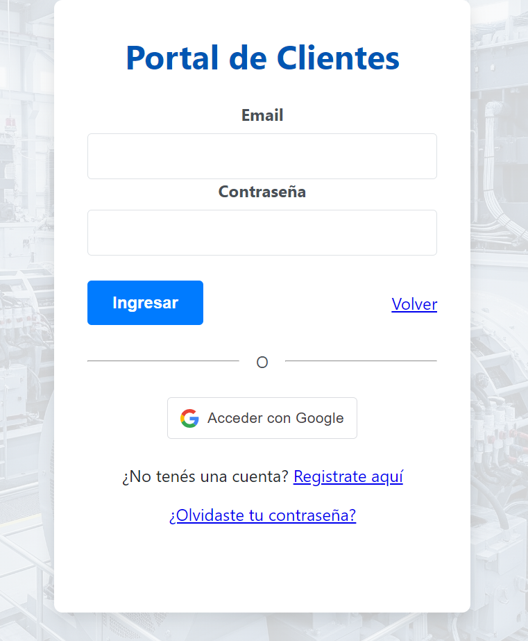
Caso de Uso 2: De Prospecto a Cliente
Un nuevo cliente potencial se registra en el portal. En el módulo de Prospectos, el administrador puede ver la lista de pendientes.
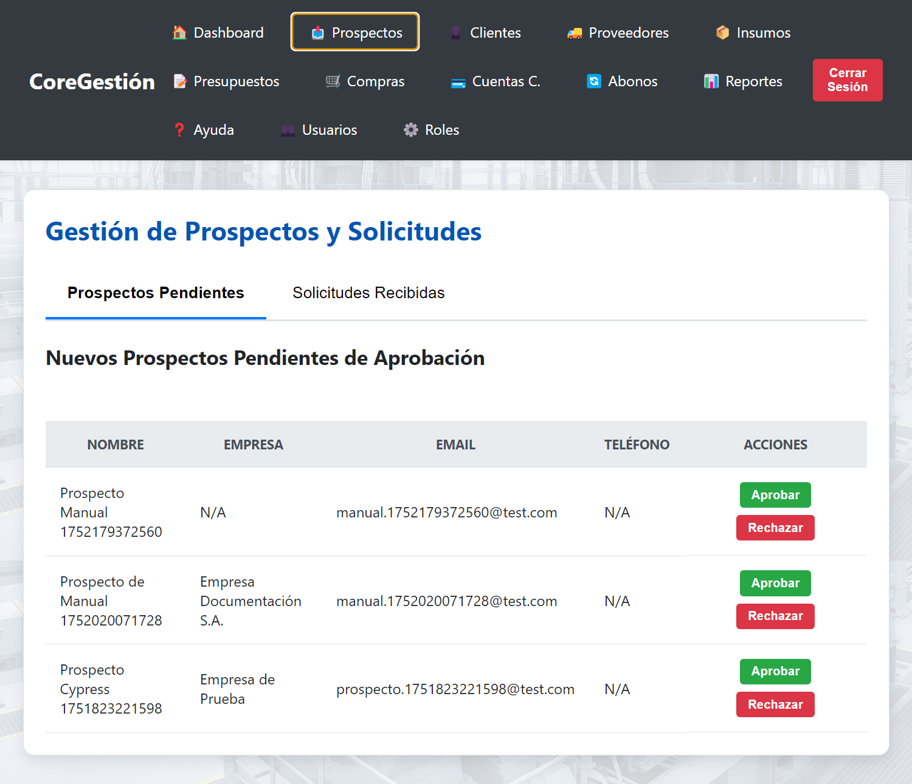
Al hacer clic en "Aprobar", el prospecto es convertido en un cliente formal y añadido a la base de datos principal, desapareciendo de la lista de pendientes.
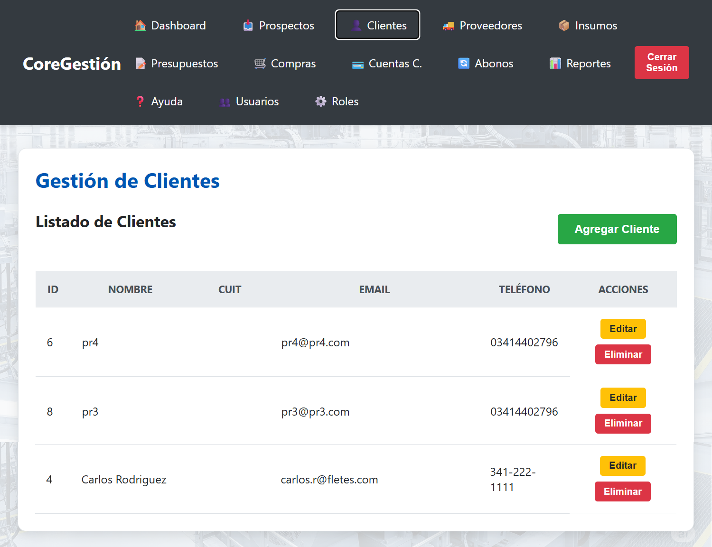
Caso de Uso 3: Ciclo de Vida de un Presupuesto
Una vez que un cliente está en el sistema, podemos crearle cotizaciones. El módulo de Presupuestos es el corazón del ciclo de ventas.
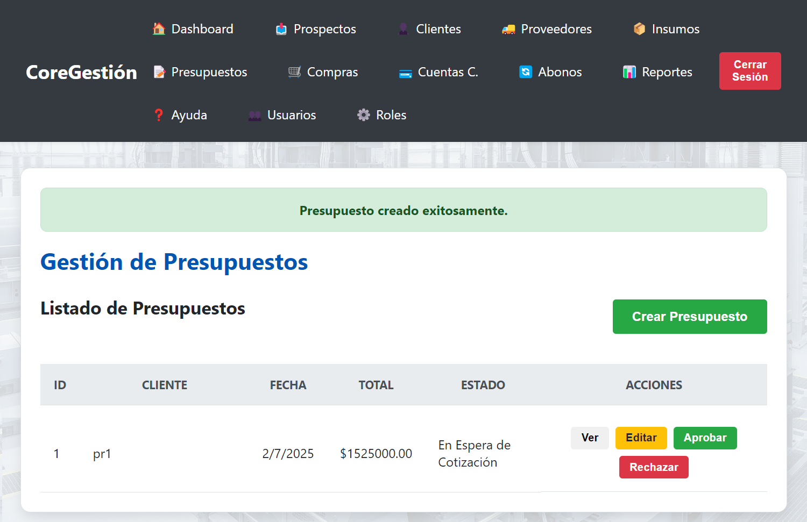
A medida que el negocio avanza, actualizamos el estado del presupuesto con los botones de acción, por ejemplo, a "En Ejecución" y finalmente a "Fac. Fiscal" después de pasar por la facturación interna.
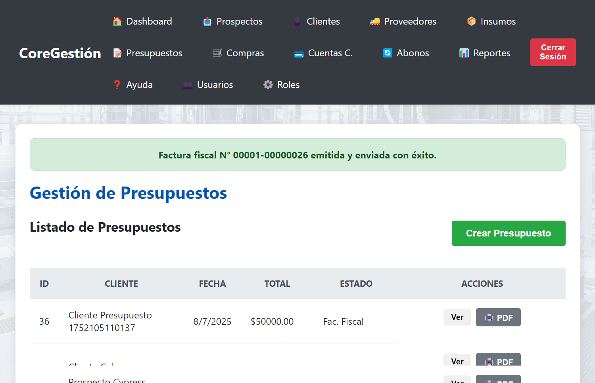
Caso de Uso 4: Gestión de Cobranzas
Toda factura genera una deuda en la Cuenta Corriente del cliente. Desde aquí, podemos registrar un pago y aplicarlo a las facturas pendientes.
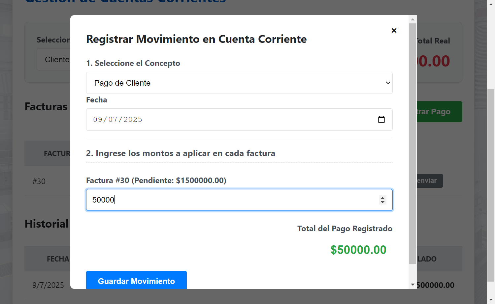
El pago queda reflejado en el historial completo de movimientos del cliente, actualizando los saldos automáticamente.
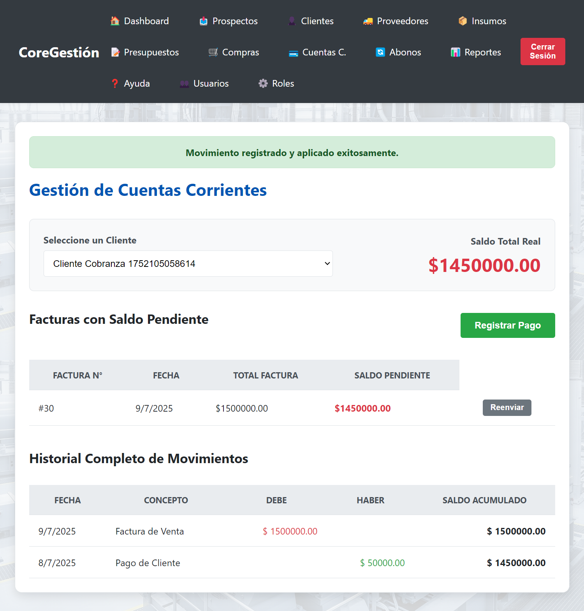
Caso de Uso 5: Análisis y Reportes
El módulo de Reportes transforma los datos operativos en información valiosa para entender la salud de su negocio.

Caso de Uso: Ciclo de Venta
Este flujo describe el proceso que realiza un vendedor para crear una cotización para un cliente existente y llevarla hasta la facturación.
Paso 1: Creación del Presupuesto
Desde el módulo de Presupuestos, el vendedor puede iniciar una nueva cotización, seleccionar un cliente ya existente de la base de datos y añadir los productos o servicios solicitados.

Paso 2: Facturación del Servicio
Una vez que el presupuesto ha sido aprobado por el cliente y el trabajo se ha completado (estado "En Ejecución"), el vendedor puede proceder a la facturación. Esto genera la factura interna y la deuda correspondiente en la cuenta corriente del cliente, dejando el presupuesto en estado "Facturado".

Caso de Uso 6: Servicios Recurrentes (Abonos)
Cuando se factura un presupuesto que contiene un servicio recurrente, el sistema activa automáticamente una suscripción. En el módulo de Abonos, puede visualizar y gestionar todas las suscripciones activas.

Caso de Uso 7: Gestión de Compras y Stock
El sistema permite registrar compras a proveedores para reponer el inventario y actualiza el stock de los insumos automáticamente.

Caso de Uso 8: Maestro de Clientes
El módulo de Clientes es su base de datos comercial. Permite crear, ver, editar y eliminar la información de las personas o empresas a las que les vende.
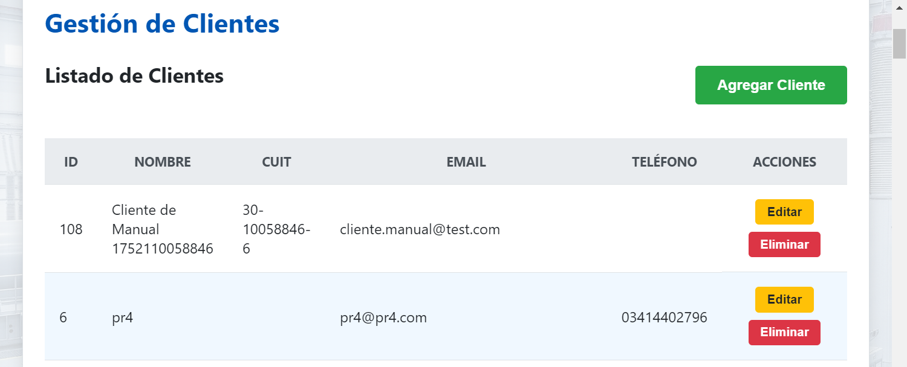
Caso de Uso 9: Maestro de Insumos y Servicios
Este módulo es su catálogo central de productos y servicios. Aquí puede definir todo lo que su empresa compra y vende, incluyendo su precio y si se trata de un servicio recurrente.
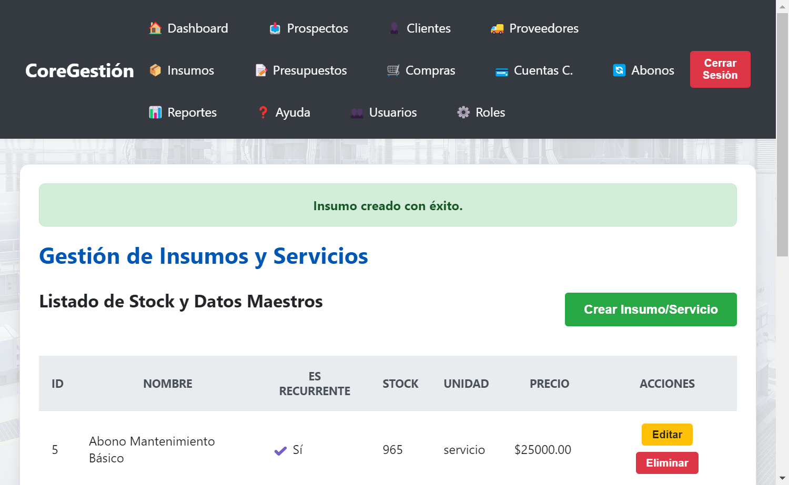
Caso de Uso 10: Maestro de Proveedores
Mantenga una base de datos centralizada de todas las empresas a las que les realiza compras de insumos o servicios.
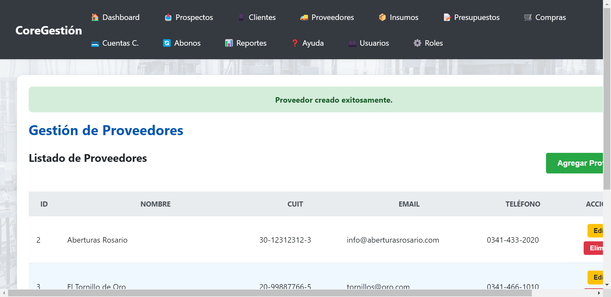
Caso de Uso 11: Administración de Roles y Permisos
CoreGestión cuenta con un sistema de roles que le permite controlar con precisión qué puede hacer cada usuario en la aplicación.
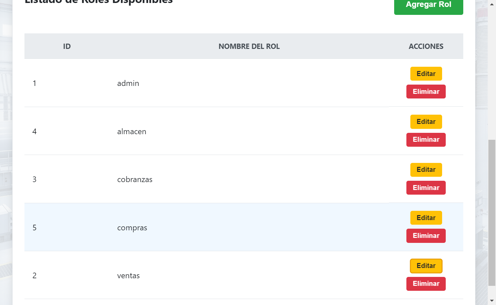